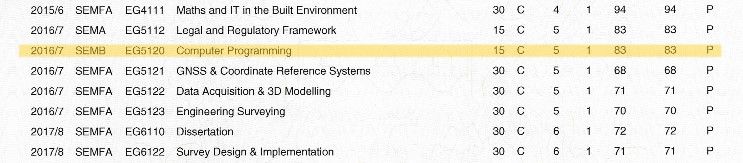

My journey in the coding universe
.....
....
Prograssion
...completed my first visual basic game at the age of 16...
...undertook 1-year computing course level4 equivalent
...ECDL...euroen computer driving license
...undertaking a computer programming module while studyng my degree at the Univeristy of East London ...

Graduated high school with honors, showcasing strong academic foundation.
Attended a leadership seminar, enhancing communication and teamwork skills.
Completed a summer internship in marketing, gaining practical experience in the field.
Volunteered at a local animal shelter, demonstrating commitment to community service.
Earned a certification in digital marketing, expanding knowledge in online strategies.
Participated in a coding bootcamp, mastering web development skills.
Completed a course in financial literacy, acquiring valuable money management skills.
Traveled abroad for a language immersion program, becoming proficient in a foreign language.
Completed a workshop on mindfulness and stress management, prioritizing mental well-being.
Engaged in a public speaking course, improving communication and presentation abilities.
Graduated high school with honors, showcasing a strong academic foundation.
Undertook an internship at a local tech company, gaining practical insights into the industry.
Successfully completed a summer coding bootcamp, enhancing programming skills.
Volunteered at a community center, organizing computer literacy workshops for seniors.
Attended a national hackathon and collaborated on a team project, fostering teamwork and innovation.
Secured a part-time job as a junior developer, applying classroom knowledge to real-world scenarios.
Participated in a leadership training program, refining communication and project management skills.
Completed a specialized online course in artificial intelligence, expanding expertise in emerging technologies.
Contributed to an open-source software project, showcasing commitment to collaborative development.
Obtained a professional certification in web development, validating proficiency in front-end and back-end technologies.
Enrolled in a university module focused on computer programming, mastering fundamental coding languages and principles.
Successfully completed assignments and projects, demonstrating a solid understanding of algorithmic concepts.
Engaged in collaborative coding exercises during the module, honing teamwork and problem-solving abilities.
Explored advanced topics such as data structures and algorithms, broadening the scope of programming expertise.
Received positive feedback from instructors on the ability to apply theoretical knowledge to practical coding challenges.
Presented a final project showcasing innovative applications of programming concepts learned during the module.
Actively participated in class discussions, contributing insights and learning from peers in a dynamic academic environment.
Applied programming skills to real-world scenarios through case studies and industry-related projects.
Achieved a commendable grade in the computer programming module, reflecting dedication and proficiency in the subject.
Integrated the acquired programming knowledge into personal projects, fostering a passion for continuous learning and application.